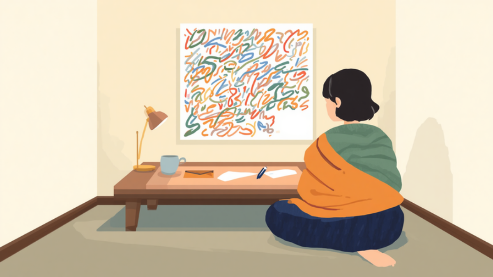
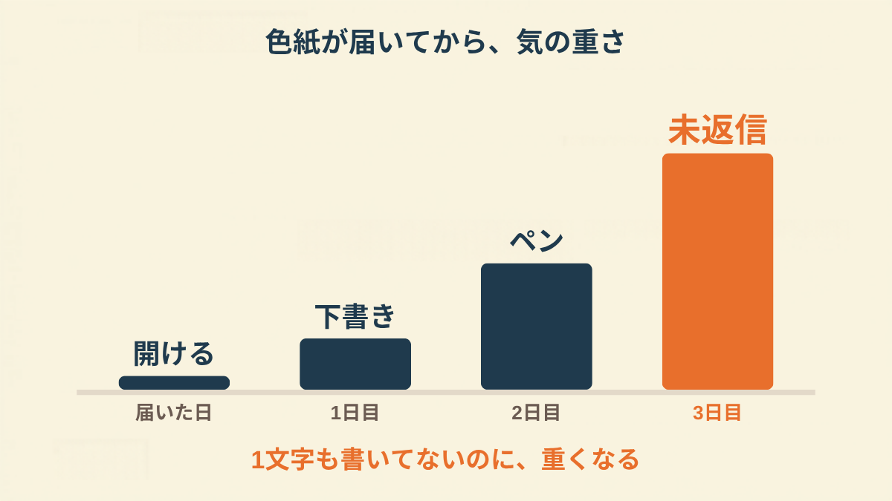
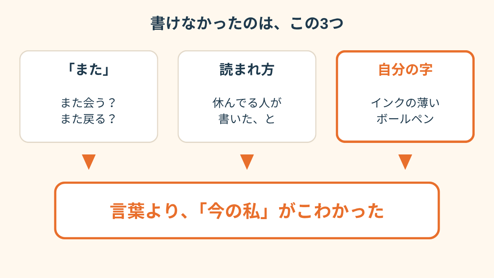
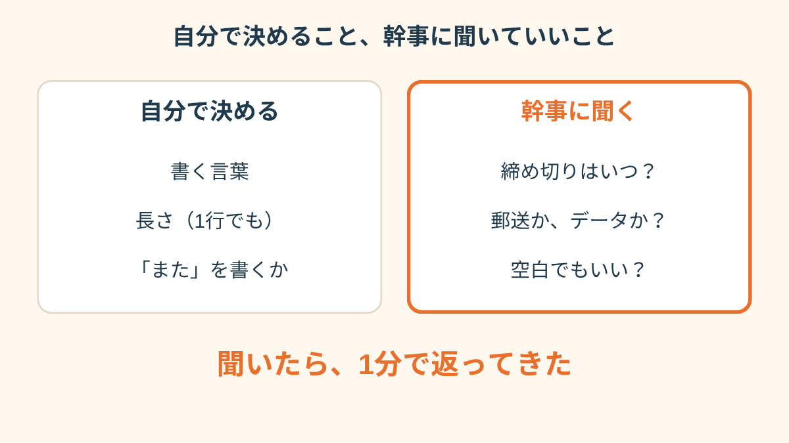
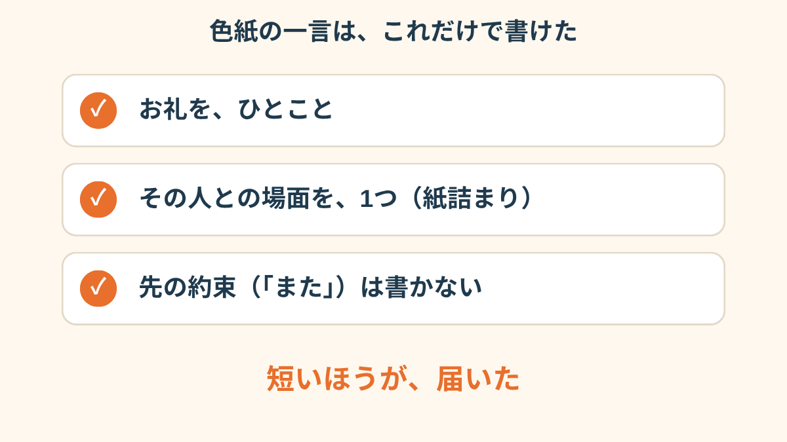
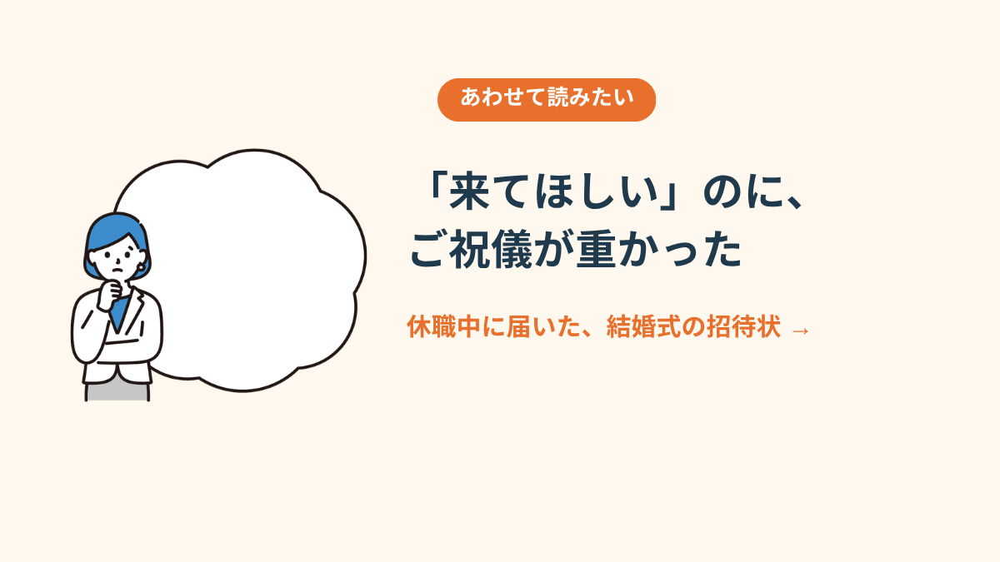
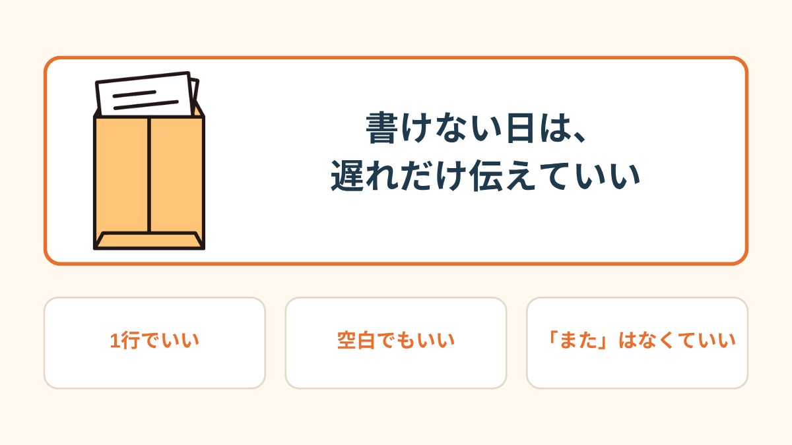

「Aさん、今月で辞めるんだって。色紙、回すから一言お願い」
休職5ヶ月目の昼、幹事の同僚からLINEが来た。Aさんには、入社1年目にコピー機の紙詰まりを何度も直してもらった。
PR


色紙は、郵送で届いた
休んでいるのに、名前は回覧のリストに残っているらしい。2日後、ポストに茶封筒が入っていた。中に色紙が1枚。もう、みんなの字で8割うまっている。
空いているのは、右下の端っこ。ペンは入っていなかった。私の分だけ、スペースが空けてあった。それが、ありがたいのと同時に、重かった。

右下だけ空いた色紙を、しばらく眺めていた

「お世話になった人に、何か書きたい」と「今の自分で書くのがこわい」は、同時にあっていいようです。まめざる
「色紙の空いたところを、一日じゅう見てました。何を書いても、休んでる人が書いたって読まれる気がして。文字が1個も出てこなかった」
30代・女性（適応障害で休職・事務職）

書けないまま、日にちだけが重くなった
書けなかったのは、言葉じゃなかった
1日目は、下書きをスマホのメモに書いた。「Aさん、長い間ありがとうございました。また」。この「また」が、消せなかった。
また、何？ また会いましょう？ また戻ります？ どっちも、今の私には嘘になりそうだった。
2日目、ペンを探すところで止まった。引き出しの奥から出てきたのは、休む前日に使った、インクの薄いボールペン。色紙に書くのは、その日の私の字になる。それがいちばんこわかった。

止まっていたのは、言葉そのものではなかった
i
ここに書いたのは、私の職場の場合の話です。寄せ書きの回し方や、休職中の人への声かけは、職場によって違います。（2026年11月時点の情報です）
「幹事の子に『書けないかも』ってだけ送ったら、『全然大丈夫、書けたら書いて』って。ずっと悩んでたの、なんだったんだろ」
20代・男性（うつ病で休職・営業職）
相談の一コマ

相談者
3日たっても書けなくて。もう、書かないほうが失礼ですよね。
まめざる
幹事さんには、まだ何も伝えていないんですか。
まめざる
遅れてることだけ、先に送ってもいいのかもしれません。

迷うところは、幹事さんに聞いてよかった
一言だけ、返した
3日目の夜、幹事に1行だけ送った。「遅くなってごめん。もう少し待ってもらえますか」。
返事は、1分で来た。「明後日まで大丈夫！ 無理なら空白でも全然いいよ」。
空白でもいい、で、肩が少し下がった。それで書けた。「Aさん、紙詰まりのとき助けてくれてありがとうございました」。11文字。「また」は、書かなかった。インクの薄いペンで、右下の端に。

書いたのは11文字だけだった
「書いた一言、あとで幹事さんが『Aさん、泣いてたよ』って教えてくれて。長く書かなくてよかったんだ、って思いました」
40代・女性（適応障害で休職・メーカー勤務）
i
「いまの自分の気持ちが、どのあたりにあるのか分からない」というときは、2問で答えられる
気持ちスキャン診断もあります。よかったら覗いてみてください。

休職中に、同僚の結婚式の招待状が届いた話 →
!
この記事は、実際にあった複数の話を組み合わせて書いたものです。寄せ書きの扱いは職場によって違います。体調がつらいときは、会社の人事や主治医、必要なら専門機関にご確認ください（2026年11月時点の情報です）。
Q. 休職中に寄せ書きを頼まれたら、書かないといけませんか？
決まりはなく、会社や職場の雰囲気によっても違います。書けそうなら短く、難しければ「体調の都合で今回は控えます」と幹事に伝える方もいるようです。体調がつらいときは主治医にも相談してみてください（2026年11月時点の情報です）。
Q. 寄せ書きには、休職中であることを書いたほうがいいですか？
書く必要はないと考える方が多いようです。「お世話になりました」など、相手に向けた短い言葉だけでも十分に気持ちは伝わります。
Q. 書けないとき、誰にどう断ればいいですか？
連絡をくれた幹事や上司に、短くメールやLINEで伝える方法があります。理由を詳しく書く必要はなく、「今回は難しい」だけでも問題ないとされることが多いです。
Q. 色紙の返送や、誰が見るかが不安なときは？
郵送やデータでの提出、締め切りの延長など、会社によっては相談できる場合があります。先に幹事へ聞いてみると、気持ちが少し軽くなるかもしれません。

この記事のまとめ
PR


まずは無料で相談してみる
返事の書き方も、うまく説明できなくて大丈夫です。一緒に整理していきましょう。
無料相談はこちら
この記事に、聞いてみたいことはありますか？
「自分の場合はどうなんだろう」と思ったことを、気軽に書いてみてください。いただいた質問は個別にお返事したうえで、匿名で記事にすることがあります。
新
おのざる
mimemime代表。就労支援の現場経験をもとに、障がいのある方の働く不安に寄り添う記事を執筆。